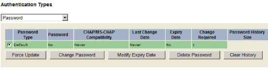

|
IdentityGuard Server 11.0 Administration Guide |
|
IdentityGuard Server 11.0 Administration Guide |
When you create or change a password, you can force the user to change the new password at their next login. Select Change Is Required On Next Usage or Change Is Required On First Usage. See Setting a password for a single user.
At any time, administrators with the userPasswordSet permission can force a user under their control to update their password the next time they log in. Since administrators can often view new passwords but not change passwords, forcing a password update is recommended. (After a user authenticates with a password, it is no longer visible in the Administration interface.)
To force a password update
1. Use the Find Accounts tab to find the user. (See Finding users.)
2. Under Authentication Types on the user’s Account Information pane, click Password.
Password information and applicable command buttons appear.

3. If the user has multiple passwords, select one.
4. Click Force Update. It is not visible if a user has not logged in at least once with the password. There is one exception. The button reappears if the Maximum Change Time policy was set and the time expires without a user updating a password. In this case, the Change Required column displays an expired notice.
5. Click Yes in the confirmation message box.
6. The Force Update option disappears. It reappears once the user logs in with the new password.